3
Подтема
Модуль 3
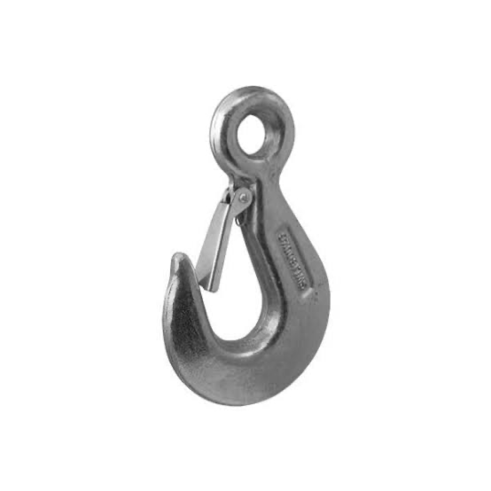
Вход в модуль
Этот модуль — про них и про устройства, которые не дают крану сделать…
Кран поднимает груз не сам по себе — между крюком и грузом всегда есть что-то…

3.1
Подтема
Грузозахватные органы
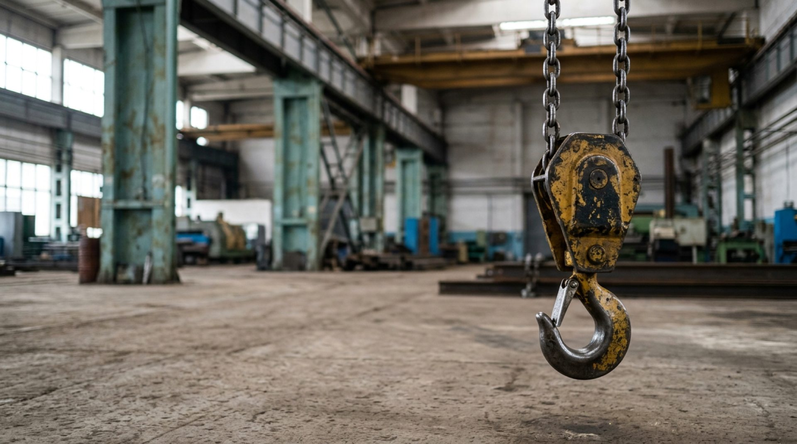
3.13.23.33.4
Вход в тему
Однажды пришлось поднимать колёсную пару локомотива — круглую, тяжёлую
Именно для таких случаев существуют не только крюки
3.13.23.33.4
Что дальше
Разберём базовую оснастку, специальные приспособления под нестандартные…
Грузы — и что делать, если на вашем предприятии…
3.13.23.33.4
Грузозахватные органы
Форма и вес груза определяют способ переноски
Дома вы не носите шкаф так же, как стул — берёте за другие точки, зовёте кого-то…
3.13.23.33.4
Грузозахватные органы
С грузозахватной оснасткой то же самое
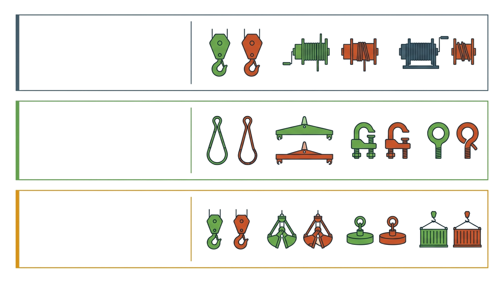
Грузозахватные органы крана
Съёмные грузозахватные приспособления
Тара
3.13.23.33.4
Грузозахватные органы
Крюки бывают трёх видов, и разница не декоративная
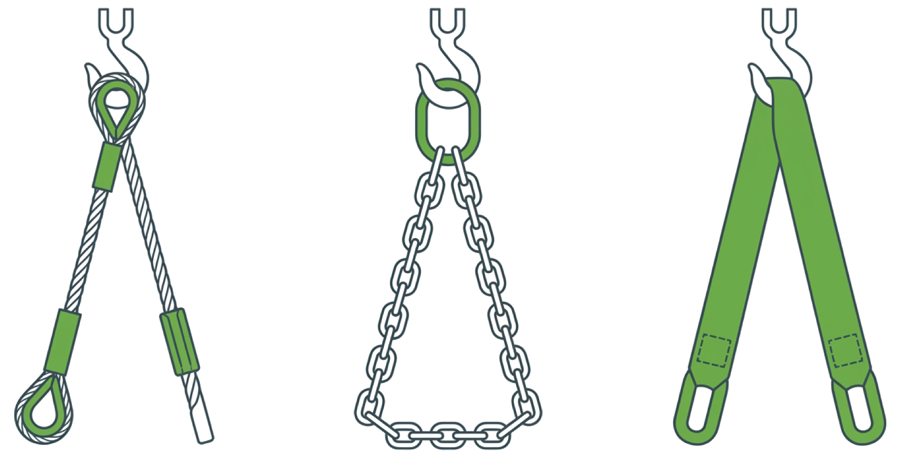
Кованый крюк изготовлен ковкой из цельной заготовки — самый распространённый вариант
3.13.23.33.4
Грузозахватные органы
Штампованный — вырублен и отформован из стального листа, легче
Дешевле в производстве, и его используют там, где грузоподъёмность крана и без того невелика
3.13.23.33.4
Грузозахватные органы
Пластинчатый крюк — это не один цельный кусок металла
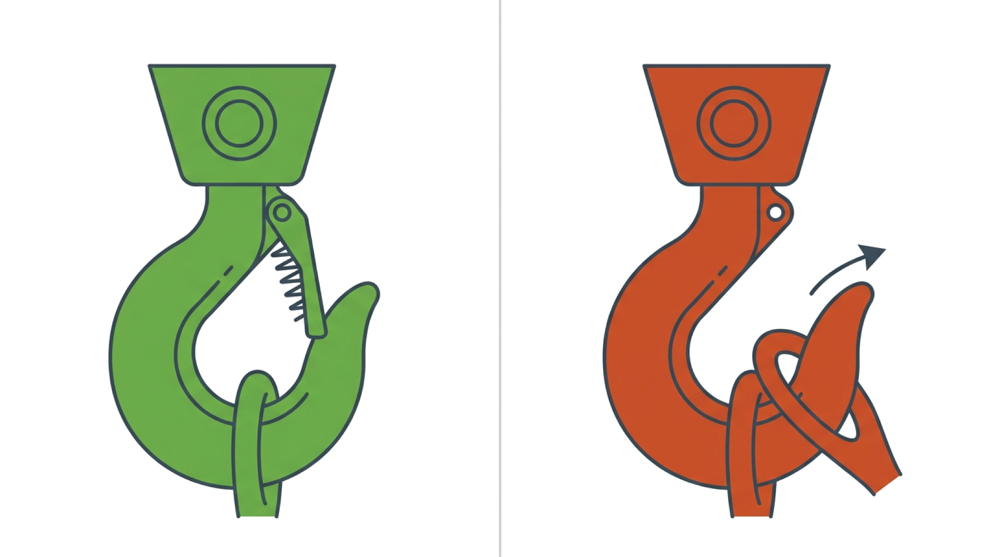
У всех трёх видов обязателен предохранительный замок — защёлка, которая не даёт…
3.13.23.33.4
Грузозахватные органы
Грейфер — раскрывающийся захват вроде большого совка с двумя…
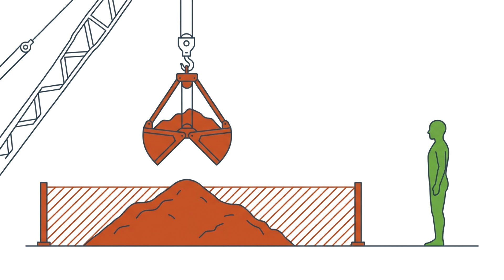
Для сыпучих грузов вроде щебня или угля
3.13.23.33.4
Грузозахватные органы
Жёсткий запрет — грейфером нельзя поднимать людей или груз
Для которого он не предназначен
3.13.23.33.4
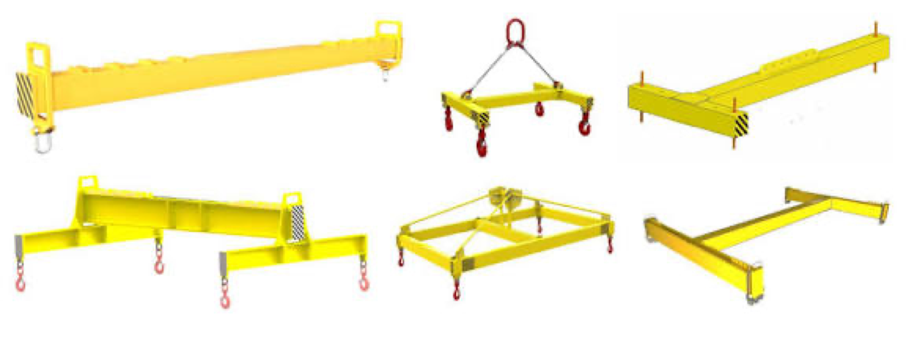
Грузозахватные органы
Траверса — другая логика
Коромысло распределяет вес на два плеча сразу
3.13.23.33.4
Грузозахватные органы
Траверса делает то же для крана: жёсткая балка или рама
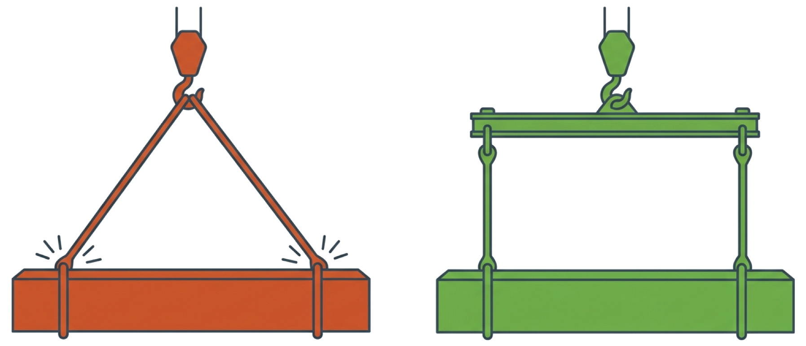
Которая держит груз в нескольких точках
3.13.23.33.4
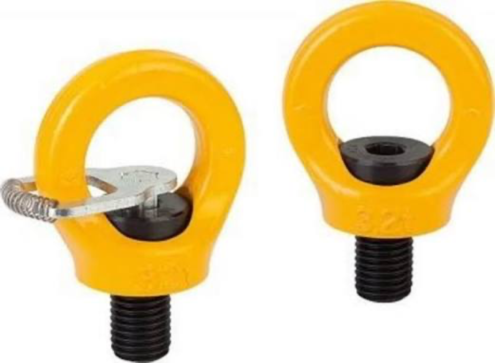
Грузозахватные органы
У части оборудования есть готовые, заводские точки для подъёма
Их не нужно обвязывать стропом, к ним подключаются напрямую
Цапфа — это выступающий приливок или палец на самой детали
3.13.23.33.4
Грузозахватные органы
С рым-болтом есть важный нюанс: он рассчитан на вполне…
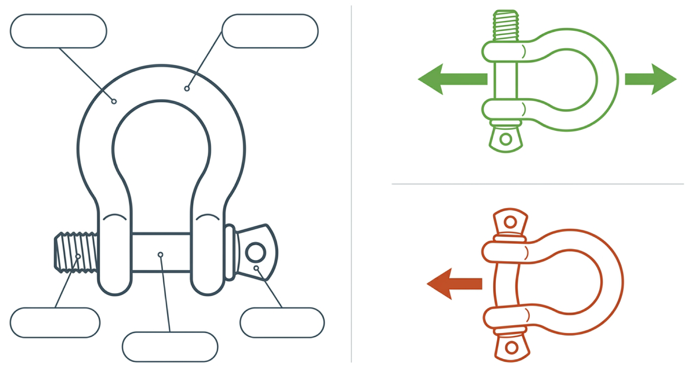
Дужка
Палец (штырь)
Проушина
Резьба под гайку
Гайка и шплинт
Так — нагрузка вдоль оси
Так нельзя — нагрузка поперёк
Направление нагрузки, у большинства — строго вертикально вверх
3.13.23.33.4
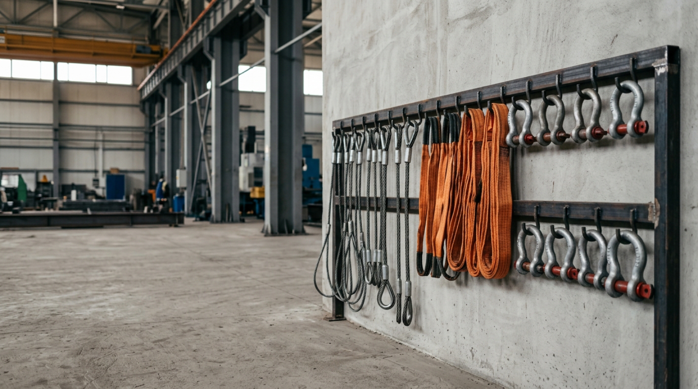
Грузозахватные органы
Типовой груз → схема строповки
Кто решает, какую оснастку применить для конкретной задачи?
Для типовых грузов это уже прописано в схеме строповки — части технологического регламента: какой груз
3.13.23.33.4
Грузозахватные органы
Ваша роль — использовать то, что там указано
Не так
Изобретать на месте более удобный на вид вариант
А так
Ваша роль — использовать то, что там указано

3.13.23.33.4
Грузозахватные органы
Приходит крупная цилиндрическая деталь без единой штатной точки…
Как это выглядит на практике — представим условный пример
3.13.23.33.4
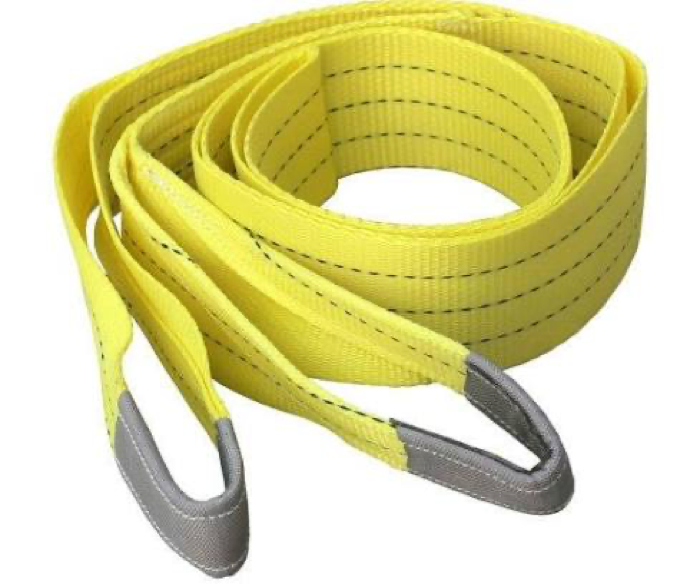
Грузозахватные органы
Ответственное лицо на месте решает: применить два текстильных стропа…
Не готовый рецепт на все похожие случаи — только пример того, как выглядит…
3.13.23.33.4
Грузозахватные органы
Оснастка по заказу предприятия — требования те же, что и к серийной
Правила такую оснастку предусматривают, но вместе с обязанностями
Часть грузозахватных приспособлений нельзя просто купить со склада
3.13.23.33.4
Грузозахватные органы
Только после этого на него ставят клеймо или бирку
1
После изготовления оно проходит осмотр и испытание нагрузкой в один и четверть…
2
Для вас практический признак ровно один: у приспособления, изготовленного по…
Нет бирки — нет применения, кто бы его ни изготовил

3.13.23.33.4
Итог подтемы
Правильная оснастка — не роскошь, а единственный рабочий вариант
Не пытайтесь заставить обычный крюк или рым-болт делать то, для чего он не…
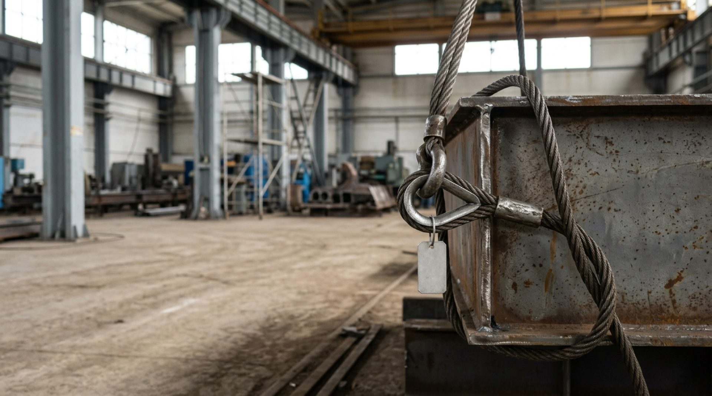
3.2
Подтема
Канаты, цепи и стропы: три вида оснастки и требования…
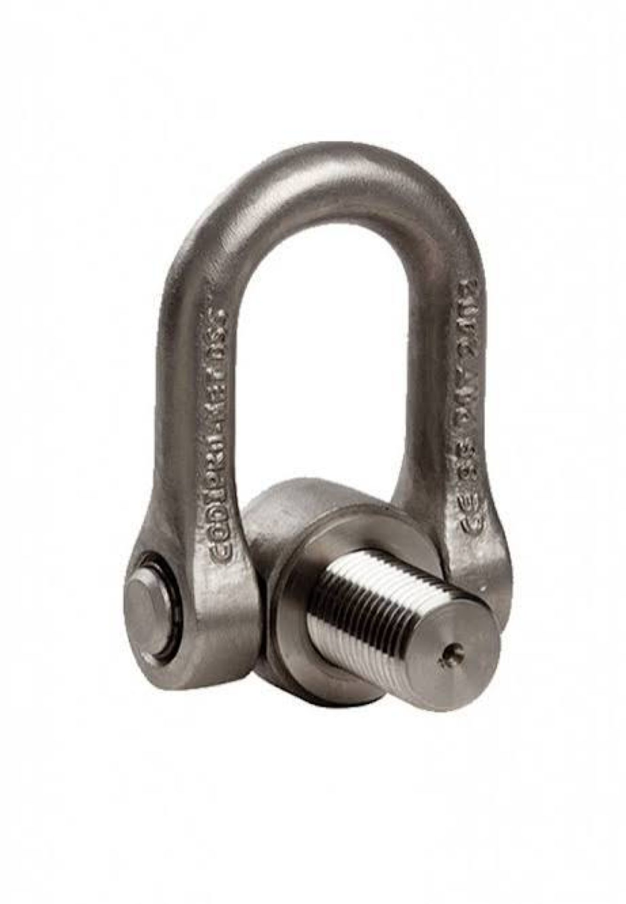
3.13.23.33.4
Вход в тему
Ноябрь две тысячи девятнадцатого года
Один из крупнейших в мире производителей такелажной…
3.13.23.33.4
К практике
То же самое верно и для строп — дело не в бренде
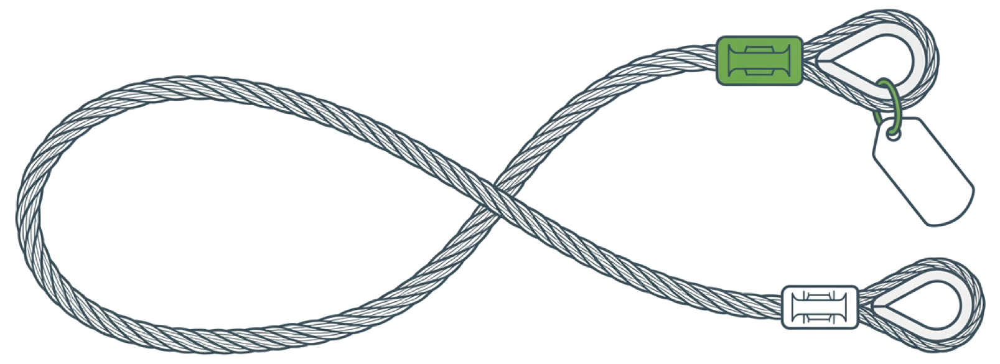
Даже арматура известного производителя может попасть в дефектную партию
3.13.23.33.4
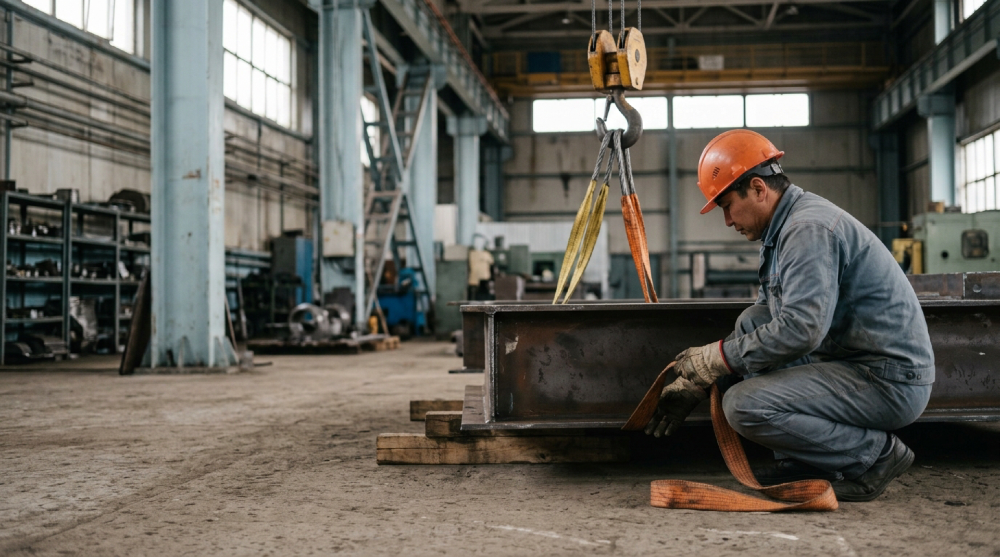
Канаты, цепи и стропы
Разные роли
Стоит различать две вещи, которые легко перепутать
Канат на барабане самого крана — тот, что наматывается и разматывается при подъёме, — часть механизма
3.13.23.33.4
Канаты, цепи и стропы
Строп — отдельный съёмный элемент, которым стропальщик обвязывает…
Или цепляет груз к крюку
Требования к сертификации касаются обоих, но это разные предметы с разной судьбой
3.13.23.33.4
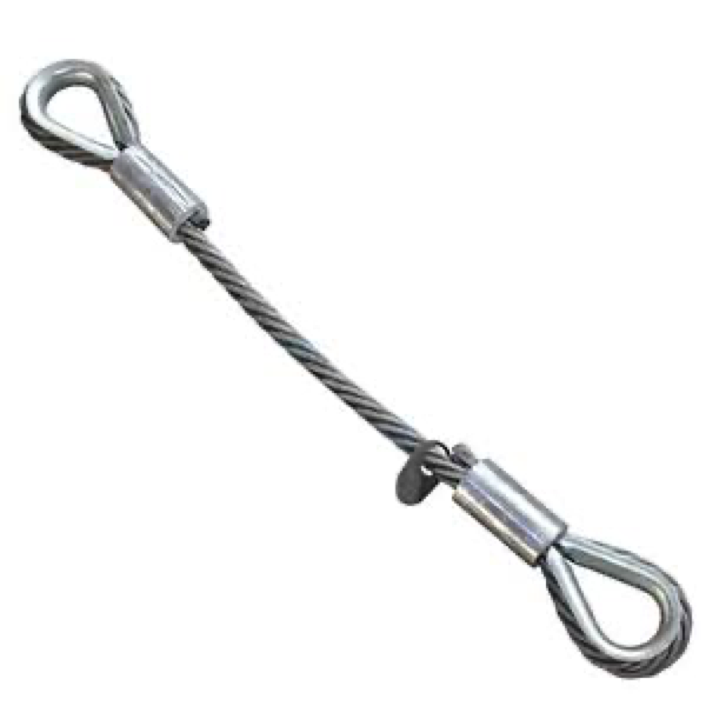
Канаты, цепи и стропы
У строп три основных вида
Канатный строп — из стального каната, самый универсальный, хорошо переносит острые кромки груза…
3.13.23.33.4
Канаты, цепи и стропы
Цепной строп — из сварной или пластинчатой цепи
Самый стойкий к высокой температуре и истиранию, применяют для горячего металла или грузов…
3.13.23.33.4
Канаты, цепи и стропы
Текстильный строп — плоская лента или кольцевой строп из синтетического…
Материала, закон отдельно разрешает такие материалы по техническим условиям изготовителя
3.13.23.33.4
Канаты, цепи и стропы
Правило сертификации одинаково для всех трёх видов и для каната самого…
Крана: без сертификата изготовителя об испытании — прямой запрет к использованию
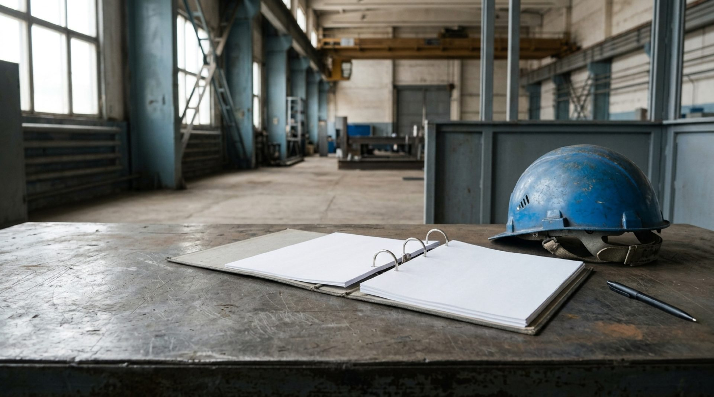
3.13.23.33.4
Канаты, цепи и стропы
Есть нюанс: если канат или цепь для стропа пришли совсем без сертификата
1
Но это делается специалистами заранее, не на площадке и не по внешнему виду
2
Для вас правило простое: строп без документа — не в работу, независимо от вида
3.13.23.33.4
Канаты, цепи и стропы
На ней грузоподъёмность обозначают не по-нашему
Отдельно — про импортную оснастку, которой на предприятиях всё больше
Предел рабочей нагрузки, по-английски WLL, — это то, что ближе всего к нашему слову «грузоподъёмность»
3.13.23.33.4
Канаты, цепи и стропы
MBL — это НЕ грузоподъёмность
1
И третье, самое опасное для путаницы: минимальная разрушающая нагрузка, MBL…
2
Это не рабочая величина: она больше рабочей в шесть-восемь раз
3
Принять её за грузоподъёмность — самая частая ошибка при чтении импортной бирки
3.13.23.33.4
Канаты, цепи и стропы
Отправная точка одна: без сертификата на площадке оказаться не должен
Даже сертифицированный строп со временем изнашивается — подробно разберём каждый…
3.13.23.33.4
Итог подтемы
Смотрите не на бренд, а на бумагу
Привезли новый строп без документов — остановитесь и уточните, каким бы удобным…
3.3
Подтема
Маркировка и техническое освидетельствование
3.13.23.33.4
Вход в тему
У автомобиля есть техпаспорт с постоянными данными — кузов, двигатель
Разные документы, разная логика обновления

3.13.23.33.4
Что дальше
Обе таблички крана, что означают цифры на них
Что такое техническое освидетельствование
3.13.23.33.4
Маркировка и техническое
Первая табличка — заводская, устанавливается изготовителем…
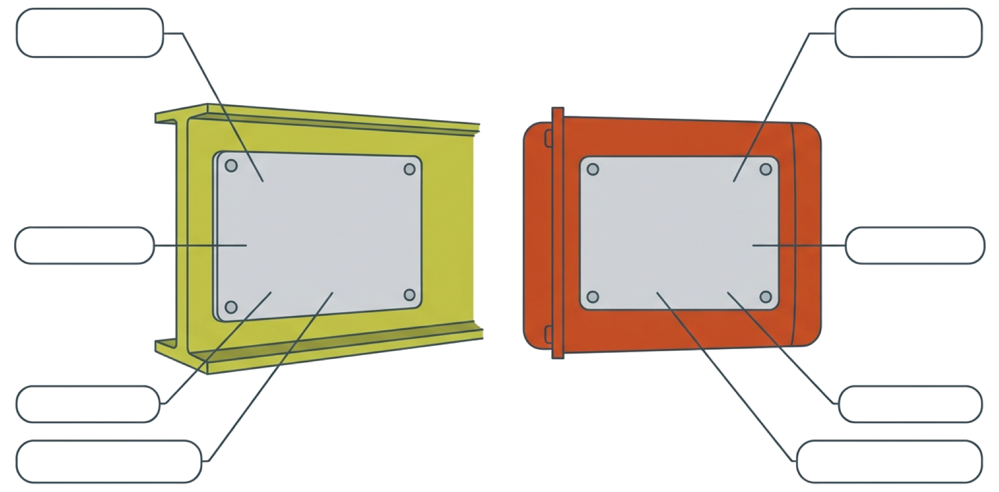
Заводская
Учётная
Изготовитель
Грузоподъёмность
Дата выпуска
Заводской номер
Грузоподъёмность
Заводской номер
Учётный номер
Виды и сроки освидетельствований
3.13.23.33.4
Маркировка и техническое
Она держится на кране весь срок его службы и не переклеивается
Как техпаспорт машины, данные в ней не меняются
3.13.23.33.4
Маркировка и техническое
Вот она и есть смысловой аналог отметки техосмотра
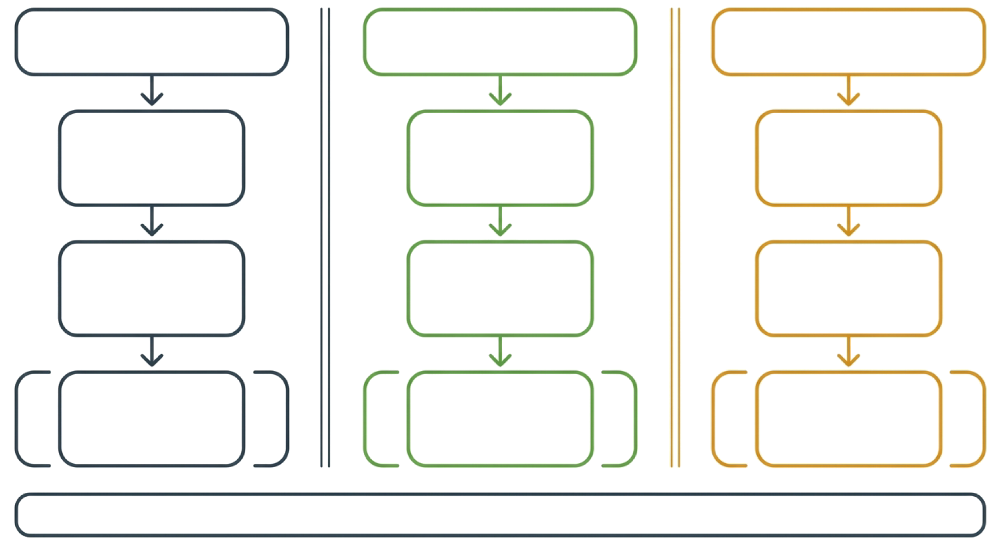
Осмотр перед сменой
ЧТО — частичное
ПТО — полное
Кто: вы, оператор
Кто: специалисты предприятия
Кто: специалисты предприятия
Каждую смену
Не реже раза в 12 месяцев
Не реже раза в 3 года
Канат, крюк, тормоза, приборы
Осмотр без нагрузки
Испытание под нагрузкой
Результат — в паспорт крана, со сроком следующей проверки
Вторая табличка появляется только у кранов, поставленных на учёт На ней — грузоподъёмность и заводской номер ещё раз, плюс два новых поля
3.13.23.33.4
Маркировка и техническое
Кран не подлежит регистрации? Даты — в паспорте
1
Но вот что важно именно для вас, и это не исключение, а самый частый случай
2
Мостовые и консольные краны грузоподъёмностью до десяти тонн включительно…
3
Электрические тали в перечне подлежащих учёту вообще не значатся
3.13.23.33.4
Маркировка и техническое
Табличка — это то, что можно свериться взглядом за секунды
Не так
Только инспектору
А так
Зачем это вообще вам
3.13.23.33.4
Маркировка и техническое
Знать его не по памяти и не со слов, а видеть на самом кране
Если на участке несколько похожих кранов с разной грузоподъёмностью, табличка…
3.13.23.33.4
Маркировка и техническое
На таре указывают её назначение, номер, собственную массу…
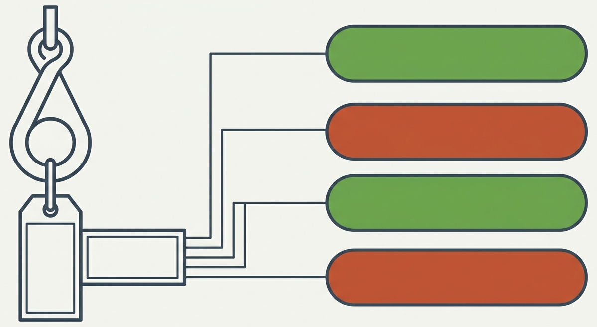
Грузоподъёмность
Без бирки — в работу нельзя
Номер и дата испытания
Номер не перебивать самому
Отдельно — про тару: это ящики, бадьи, контейнеры и поддоны, в которых краном…
3.13.23.33.4
Маркировка и техническое
Дальше идёт уже не буква правил, а здравая практика
1
Настоящая грузоподъёмность после этого ничем не подтверждена, а надпись выглядит…
2
Вернуть такое приспособление в работу можно только через тех, кто может его…
3.13.23.33.4
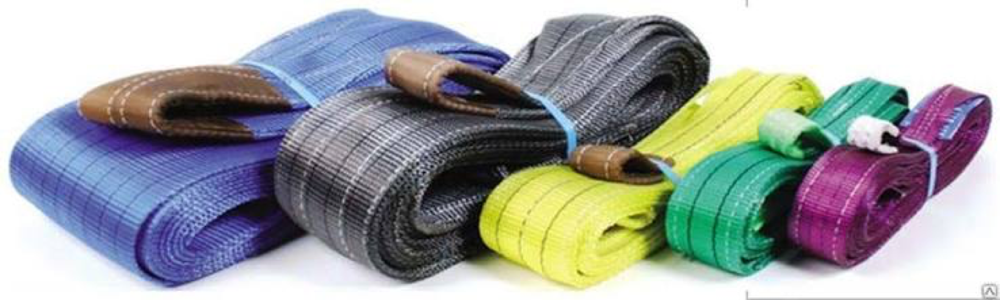
Маркировка и техническое
Дополнительное требование конкретной организации
Некоторые предприятия наносят на кран собственную, дополнительную маркировку…
3.13.23.33.4
Маркировка и техническое
Закон требует одного: заводская табличка сохраняется в целости весь срок…
Службы крана, — значит, дополнительную маркировку предприятия наносят рядом
3.13.23.33.4
Маркировка и техническое
Частичное техническое освидетельствование (ЧТО) — раз в 12 месяцев
1
Техническое освидетельствование бывает двух видов, и у обоих сокращённые…
2
Логика простая: частая и недорогая проверка — она ловит обычный, повседневный…
3.13.23.33.4
Маркировка и техническое
Полное техническое освидетельствование, сокращённо ПТО
Ещё одно испытание — грузом на десять процентов больше, с многократным…
Логика здесь другая: редкая, но гораздо более серьёзная проверка под реальной нагрузкой — она ловит то

3.13.23.33.4
Маркировка и техническое
Редко используемый кран — раз в 5 лет
Есть исключение: краны, которые используют редко и только при ремонте оборудования
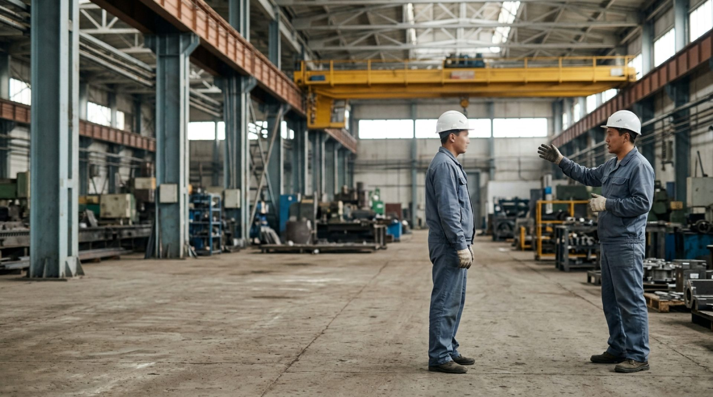
3.13.23.33.4
Маркировка и техническое
Проверяет не только специалист по надзору
1
Отдельно стоит знать про проверку крюка приборами, без разборки, — так…
2
Правила требуют её ежегодно не для всех кранов, а для тех, что возят…
3
На обычном цеховом кране состояние крюка проверяют осмотром — трещины, надрывы…
3.13.23.33.4
Итог подтемы
Две таблички, разный смысл. Обе стоит уметь прочитать
Потратьте пятнадцать секунд, взгляните на обе таблички своего крана осознанно
3.4
Подтема
Приборы безопасности

3.13.23.33.4
Вход в тему
Кран перестаёт поднимать груз выше определённой точки — жмёте кнопку
Первая мысль: «сломался, надо обойти»
3.13.23.33.4
Что дальше
Виды таких приборов, как они устроены изнутри
Что конкретно делать в каждом случае срабатывания
3.13.23.33.4
Приборы безопасности
Он не сломался: сеть перегрузилась
Автоматический выключатель дома — «выбило пробки»
3.13.23.33.4
Приборы безопасности
Разумный человек не чинит щиток сам, а разбирается, что перегрузило сеть
3.13.23.33.4
Приборы безопасности
Первый прибор — концевой выключатель
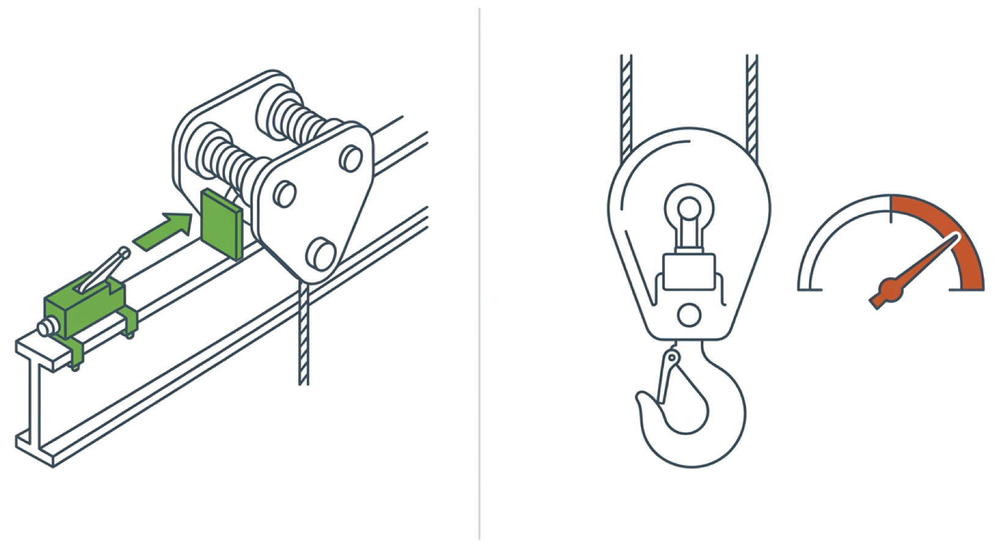
Он ограничивает крайние положения механизма: подвеска доходит до определённой высоты
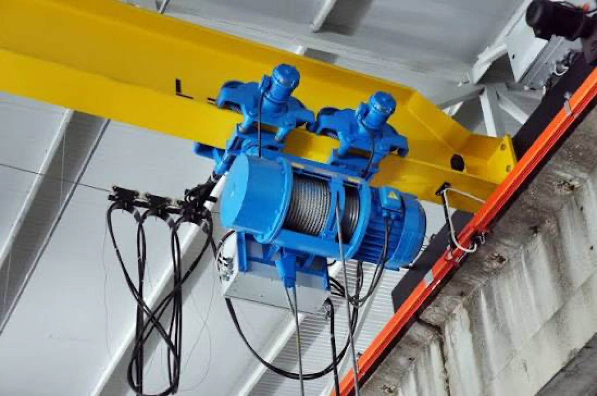
3.13.23.33.4
Приборы безопасности
Правила задают даже запас, который должен остаться после срабатывания
Этот зазор и есть то, что отделяет остановку от удара крюковой подвески о барабан
3.13.23.33.4
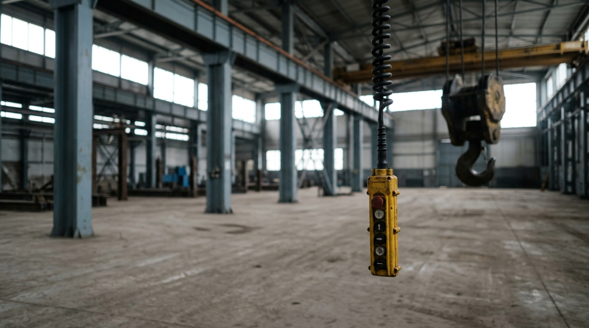
Приборы безопасности
Здесь важная оговорка, которую редко проговаривают
Второй прибор — ограничитель грузоподъёмности
Он следит за весом через датчик нагрузки и сравнивает его с заранее заданным пределом для этого крана
3.13.23.33.4
Приборы безопасности
На вашем кране его может не быть вообще, и такой кран разрешено…
Узнайте это про свой кран заранее: если ограничителя нет, единственным барьером…
3.13.23.33.4
Приборы безопасности
Кнопочный аппарат сам по себе устроен как защитное устройство
То, что вы держите в руках
3.13.23.33.4
Приборы безопасности
То, что прямо связано с током
Именно поэтому повреждение кабеля пульта или его корпуса относится к однозначным…
Корпус кнопочного аппарата либо заземляют — причём двумя отдельными проводниками
3.13.23.33.4
Приборы безопасности
Проверка, что все ограждения на месте, — часть осмотра из Модуля пятого
1
Не прибор, а простое физическое ограждение
2
Барабан, на который наматывается канат, зубчатая передача редуктора — открытые…
Не прибор, а простое физическое ограждение
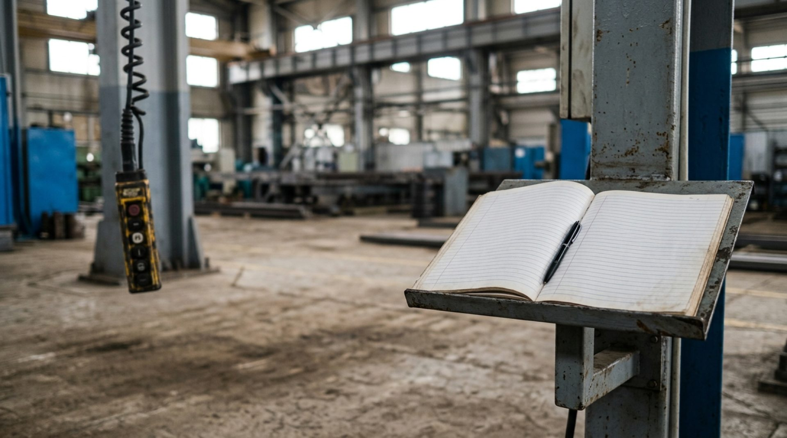
3.13.23.33.4
Приборы безопасности
Отдельная защита, о которой стоит знать, потому что она касается не вас…
1
У кранов мостового типа предусмотрено устройство, которое автоматически снимает…
2
Обратите внимание на границы: это требование именно к мостовым кранам и именно к…
Если кто-то поднялся к путям — вы об этом должны узнать из журнала до начала смены
3.13.23.33.4
Приборы безопасности
Реальный перегруз
1
Сработал ограничитель, и вы понимаете, что груз действительно тяжелее, чем…
2
Решение — остановиться, пересмотреть план подъёма, уточнить массу
3
Но даже здесь стоит сказать лицу, ответственному за безопасное производство…
3.13.23.33.4
Приборы безопасности
Похоже на неисправность? Не выясняйте сами
1
Другой случай — прибор срабатывает, хотя груз в пределах нормы, или ведёт себя…
2
Здесь — не разбирайтесь сами и не подвергайте себя риску рядом с механизмом
3
Остановитесь и сообщите специалисту, ответственному за исправное состояние
3.13.23.33.4
Приборы безопасности
Что будет, если ограничитель просто отключить или заблокировать навсегда?
На части кранов предусмотрен временный обход — специальным ключом, под контролем
3.13.23.33.4
Приборы безопасности
Постоянное отключение — совсем другое: барьер перестаёт работать…
Не на одну ситуацию, а на все последующие подъёмы, о которых уже никто не вспомнит
3.13.23.33.4
Приборы безопасности
Ограничитель — последний рубеж перед перегрузкой
Почему это настолько серьёзно
Ограничитель грузоподъёмности — это барьер, который стоит последним перед реальной перегрузкой…
3.13.23.33.4
Приборы безопасности
Отраслевая статистика по крановым происшествиям стабильно называет удар…
Отключённый ограничитель убирает именно тот барьер, который должен был поймать…
3.13.23.33.4
Итог подтемы
Прибор сработал — значит, сделал именно то, для чего его поставили
Срабатывание прибора — не помеха, а момент, ради которого он существует
3.13.23.33.4
Заключение модуля
Вы различаете три типа крана, знаете, где искать документацию завода…
Вы различаете три типа крана, знаете, где искать документацию завода и что…
Крюк — не единственный способ взять груз, есть траверсы и другие захваты, в том…
Канат или цепь без сертификата не выходит на площадку
3.13.23.33.4
Заключение модуля
Табличка и техническое освидетельствование — данные
Табличка и техническое освидетельствование — данные, которые стоит понимать